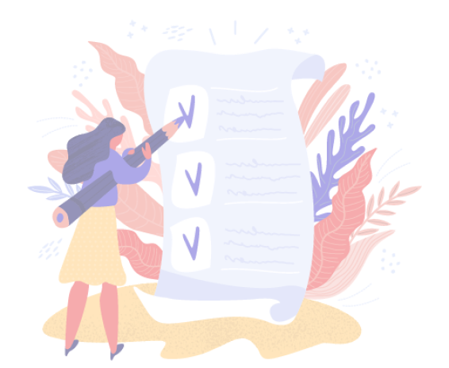

چه کارهایی امروز برای انجام داری؟
میتونی الان تسکهاتو اینجا بنویسی و برنامه ریزی رو شروع کنی!

۳ تسک را باید انجام دهید.

میتونی الان تسکهاتو اینجا بنویسی و برنامه ریزی رو شروع کنی!
جلسه با محسن یگانه و مریم جلالی
۳ تسک انجام شده است.